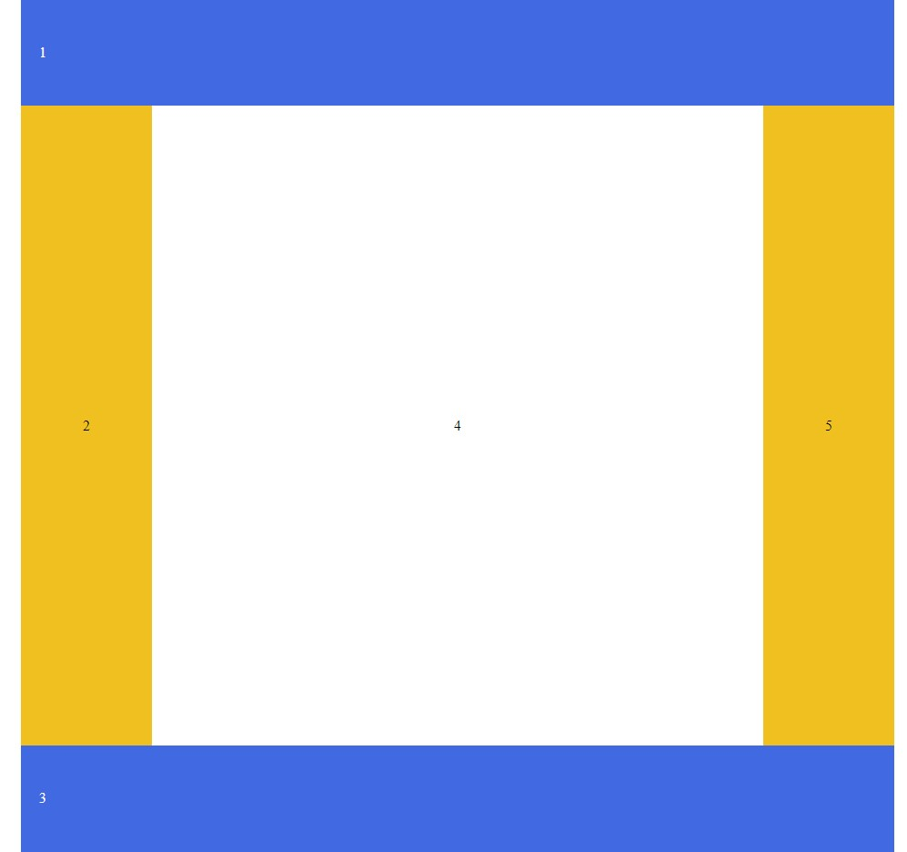

В ході виконання Лабораторної роботи №3 було:
- застосовано на практиці навички роботи верстки сторінок засобами CSS
- порівняно різні способи верстки веб-сторінки за макетом
- з’ясовано переваги та недоліки різних типів макетів веб-сторінок.
Також ми вияснили, що викорустовувати блоки для побудови структури сайту набагато краще, оскільки код самої структури і стилізація відокремлені, що забезпечує читабельність коду.
Також перевага викорустовувати блоки полягає у тому, що для її реалізації необхідно менше коду у самому html файлі.
В 7-му варінті були написано 20 рядків коду
А в табличній верстці було написано 42 рядки.
Звіти з лабораторних робіт
з дисципліни «Основи Front-end та Backend розробок»
Роботу виконали студенти групи ІА-93 Візняк Максим та Дюг Андрій
Start
Тема: БЛОЧНА ВЕРСТКА HTML-ДОКУМЕНТУ ЗА МАКЕТОМ. ВЕРСТКА ЗАСОБАМИ CSS та FLEXBOX.
Мета:
Придбати практичні навички роботи верстки сторінок засобами CSS, верстки на основі плаваючих елементів, з’ясувати переваги та недоліки типів макетів веб-сторінок
Придбати практичні навички роботи верстки сторінок засобами CSS та FLEXBOX
1-ий Варіант
Table


7-ий Варіант
Table

1-ий Варіант
Float


7-ий Варіант
Float